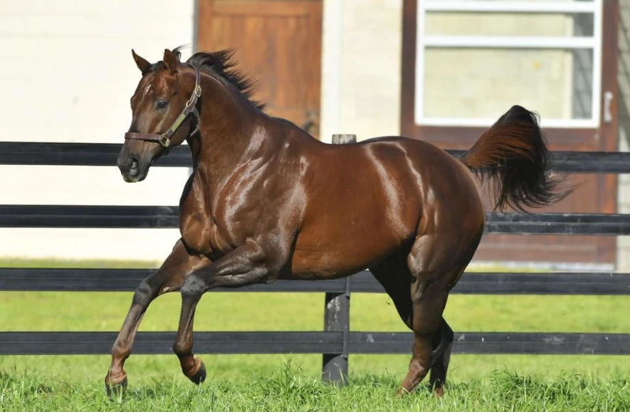

Nuevo padrillo · 2025
Holy Boss USA
En servicio en el Haras Santa María de Juncal
Es un gran honor para nuestro Haras presentar a Holy Boss, disponible para la presente y las próximas temporadas de servicios.
- OrigenEstados Unidos
- En UruguayPadre de Capo Boss, sprinter en Maroñas
- En ArgentinaPadre de 3 ganadores clásicos